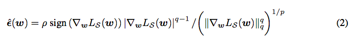
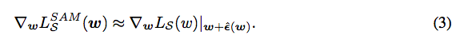
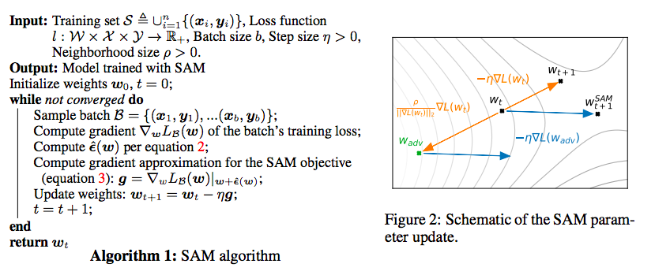

根据论文《When Vision Transformers Outperform ResNets》，可以知道，优化器SAM对过拟合抑制，对泛化性的提交很有帮助。很让人有所启发。对我以往的工作有很多rethinking。所以阅读了SAM的论文和代码。
论文：https://openreview.net/pdf?id=6Tm1mposlrM。发表于iclr 2021。短短时间引用26次
代码：https://github.com/google-research/sam/blob/dae9904c4cf3a57a304f7b04cecffe371679c702/sam_jax/training_utils/flax_training.py#L466
论文里的核心部分是：
先前向->反向，求一个\epsilon。计算公式为：

假装以w+\epsilon为参数，再前向->反向，求一个\delta w，计算公式如下：

回到w点，\delta w更新w即可。
算法框架为：

主要实现的代码如下：
第一次前向+反向：
(_, (inner_state, _)), grad = jax.value_and_grad(
lambda m: forward_and_loss(m, true_gradient=True), has_aux=True)(model)
noised_model = jax.tree_multimap(lambda a, b: a + rho * b,
model, grad)
第二次前向+反向：
(_, (_, logits)), grad = jax.value_and_grad(
forward_and_loss, has_aux=True)(noised_model)
#clip一下梯度且更新
grad = clip_by_global_norm(grad)
new_optimizer = optimizer.apply_gradient(grad, learning_rate=lr)
# Compute some norms to log on tensorboard.
gradient_norm = jnp.sqrt(sum(
[jnp.sum(jnp.square(e)) for e in jax.tree_util.tree_leaves(grad)]))
param_norm = jnp.sqrt(sum(
[jnp.sum(jnp.square(e)) for e in jax.tree_util.tree_leaves(
new_optimizer.target)]))
-----------------------------------
大家好，我来自fast lab。我开始不定时公开写作。这些写作主要通过两个渠道公布：一是FAST LAB官方网站；一是印象识堂（微信可访问）。欢迎大家订阅。谢谢！
FAST Lab的官方网址为：
https://wanggrun.github.io/projects/fast
除此外，还可以关注我的小伙伴王广润：
https://wanggrun.github.io/
王广聪：
https://wanggcong.github.io/
石阳：
https://www.linkedin.com/in/%E9%98%B3-%E7%9F%B3-381b521a4/
有时候这些网站打不开，请耐心多点几次。
多谢大家关注。
返回博客目录Return to all Blogs
返回主页Return to homepage